QA Capture → ClickUp
버그 발견부터 티켓 등록까지, 딸깍 한 번
화면을 캡처하고 주석을 달면, 재현 단계·콘솔 에러·환경 정보까지 자동으로 채워져 ClickUp에 등록됩니다. AI가 내용을 다듬어 초안을 완성해 줍니다.
캡처→
주석·자동 정보→
AI 정리(선택)→
ClickUp 등록 · 30초
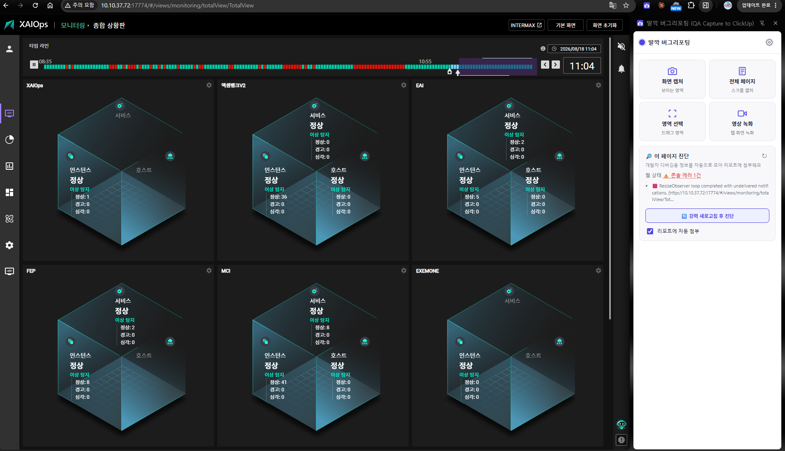
페이지를 조작하는 동안에도 오른쪽 사이드 패널이 유지됩니다.
설치 · 배포
설치 — 어떻게 올라가나
별도 빌드가 필요 없습니다. 담당자에게 받은 ZIP을 풀어 크롬에 올리면 됩니다.
- ZIP 받기 · 압축 풀기담당자에게 받은
ttalkkak-bug-reporter.zip을 원하는 위치(예: 바탕화면·문서 폴더)에서 마우스 우클릭 → “압축 풀기”로 해제합니다. 압축을 푼 뒤 생긴 폴더를 사용합니다(ZIP 안에서 바로 로드 X).
- 폴더 위치 정하기한 번 로드한 뒤에는 폴더를 옮기거나 이름을 바꾸지 마세요. 경로가 바뀌면 확장이 새 확장으로 인식되어 저장한 설정(토큰·리스트 등)이 초기화됩니다.
- 개발자 모드로 로드크롬
chrome://extensions → 우상단 개발자 모드 ON → “압축해제된 확장 프로그램 로드” → 압축 푼 폴더 선택
- 툴바 아이콘 클릭 → 사이드 패널아이콘이 안 보이면 툴바의 퍼즐(🧩) 아이콘 → 딸깍을 고정(핀)하세요. 코드 갱신 후에는 카드의 새로고침(🔄)만 누르면 반영됩니다.
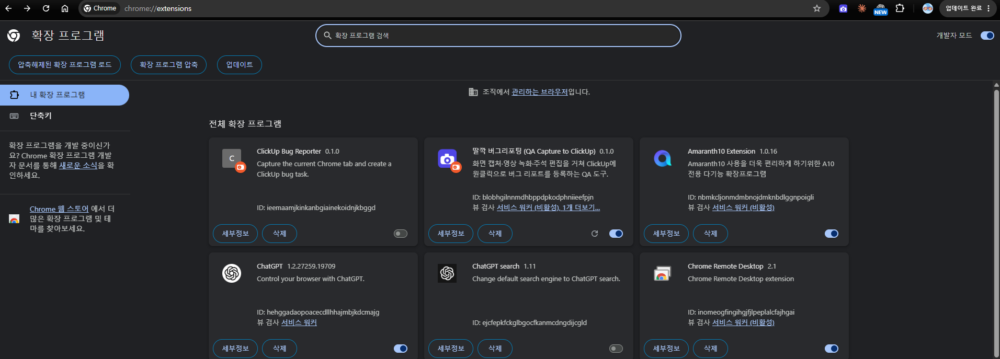
chrome://extensions → 개발자 모드 ON → 압축 푼 폴더 로드.
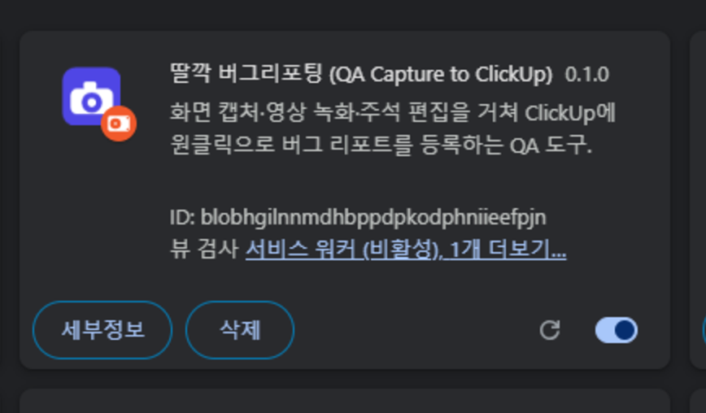
로드되면 “딸깍 버그리포팅” 카드가 생깁니다. 오른쪽 토글이 켜져 있어야 동작합니다.
팀에서 함께 쓰려면
ClickUp 토큰
개인 계정 토큰이므로 각자 발급해서 입력합니다.
AI (선택)
사내 프록시 권장 — 호스트 PC 한 곳에서 프록시(proxy/start-proxy.bat)를 돌리고, 팀원은 옵션에 서버 주소 + 접속 토큰만 입력합니다. 실제 OpenAI 키는 호스트에만 있어 팀원에게 노출되지 않습니다. AI를 안 쓰는 팀원은 키 없이도 캡처·진단·등록을 모두 사용할 수 있습니다.
배포 팁
ZIP으로 폴더를 공유하면 팀원은 chrome://extensions → 개발자 모드 → “압축해제된 확장 프로그램 로드”로 바로 설치할 수 있습니다. 각자 ClickUp 토큰만 입력하면 준비 완료입니다.
설정
ClickUp 연결
옵션 페이지(패널의 ⚙️)에서 한 번만 설정하면 됩니다.
- 개인 API 토큰 발급ClickUp 우상단 아바타 → Settings → All settings → ClickUp API → Generate. 표시된 토큰은 Copy 버튼으로 복사 (Bearer 접두어 없이).
- 토큰 붙여넣기 → 연결 테스트“연결 성공 — 사용자: …”가 뜨면 정상입니다.
- 리스트 찾아보기워크스페이스 → 스페이스 → 폴더 → 리스트를 순서대로 골라 선택합니다. (ClickUp URL에는 리스트 ID가 안 보이는 경우가 많아 이 방식이 안전)
- 저장
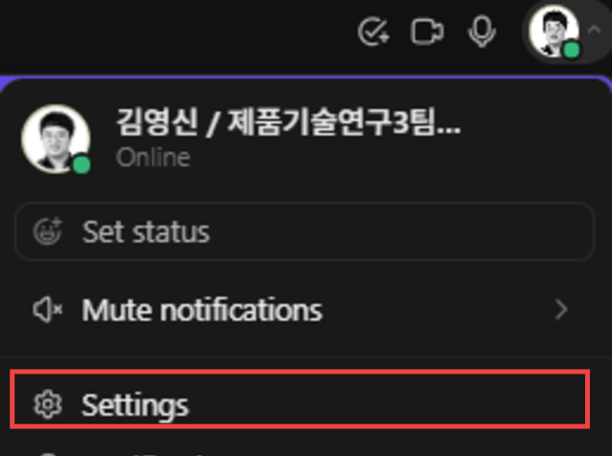
STEP 1 — ClickUp 우상단 아바타 → Settings.
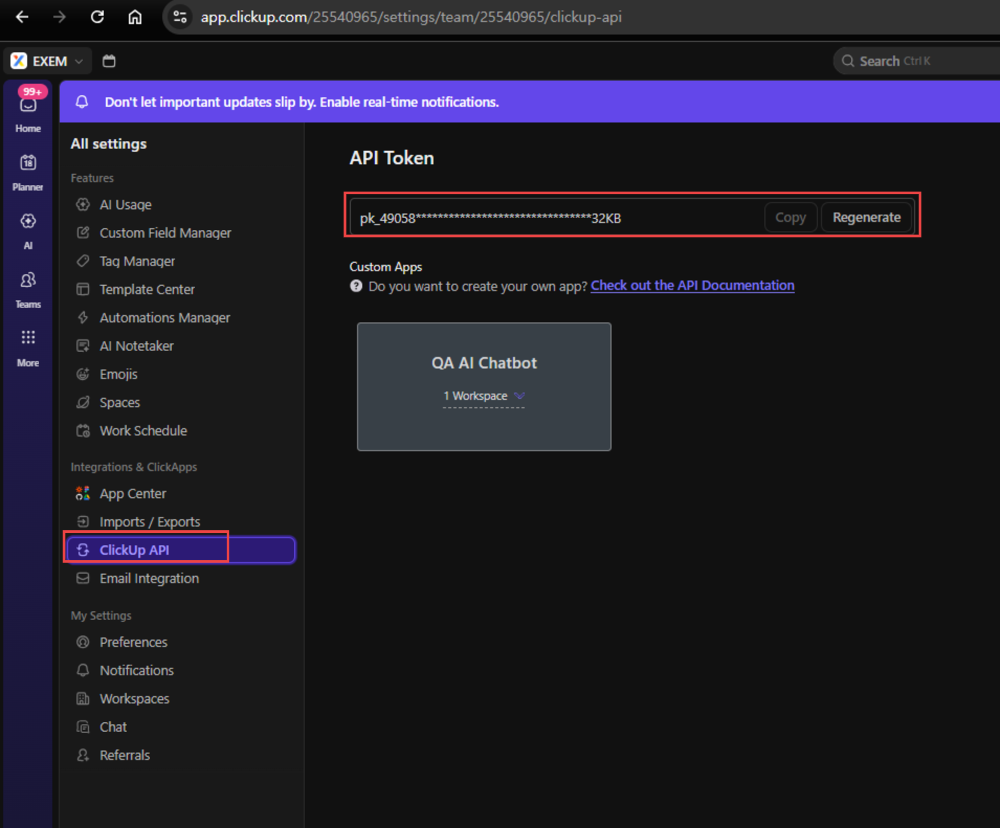
All settings → ClickUp API → Copy 버튼으로 토큰 복사(눈으로 옮겨 적지 말 것).
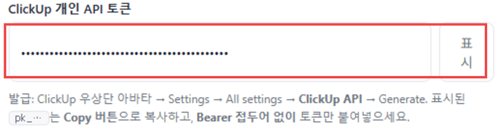
옵션에 토큰 붙여넣기 → 연결 테스트로 확인.
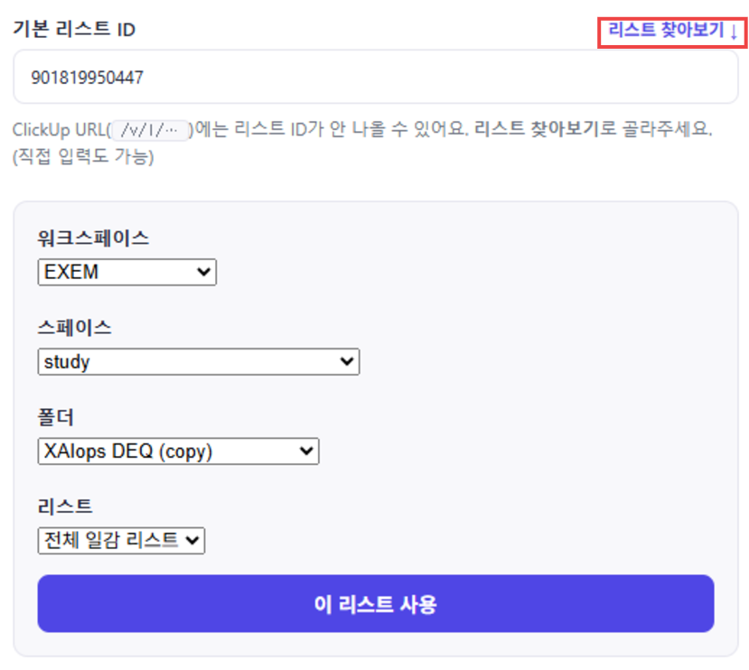
리스트 찾아보기로 워크스페이스→스페이스→폴더→리스트 선택 후 저장.
AI (OpenAI) — 로컬 프록시
AI 관련 값(접속 토큰·모델·base URL)은 배포본에 미리 설정되어 있어 설정 화면에서 비활성 상태로 표시됩니다. 팀원은 따로 입력할 필요가 없습니다. (실제 OpenAI 키는 담당자 PC의 프록시에만 있어 노출되지 않습니다.)
접속 토큰
담당자 프록시 접속 토큰(●●●로 마스킹). 실제 OpenAI 키가 아닙니다. 고정.
base URL
담당자 로컬 PC 프록시 주소 http://…:8770/v1. 고정.
스크린샷 전송
체크하면 이미지도 AI에 함께 전송(이미지 인식). 유일하게 켜고 끌 수 있는 옵션입니다.
연결 확인 — 저장 전에 두 버튼
저장하기 전에 아래 두 버튼으로 정상 동작을 꼭 확인하세요. 초록 메시지가 뜨면 정상, 빨간 메시지면 아래 안내를 확인합니다.
연결 테스트ClickUp
ClickUp 토큰이 유효한지 확인합니다. 연결 성공 — 사용자: 홍길동 이 뜨면 정상. 빨간 메시지면 토큰을 다시 붙여넣으세요(Bearer 없이 pk_…).
AI 연결 테스트OpenAI 프록시
프록시를 거쳐 OpenAI 연결을 확인합니다. OpenAI 연결 성공! 사용 가능한 모델 126개 확인됨 이 뜨면 정상. 빨간 메시지면 담당자 PC의 프록시가 켜져 있는지·같은 사내망인지 확인하세요.
저장
두 테스트가 정상이면 저장을 누릅니다. 팀원이 직접 입력할 것은 ClickUp 토큰·리스트뿐이며, AI 값은 이미 설정돼 있습니다.
기능
캡처 4종
툴바의 딸깍 아이콘을 누르면 오른쪽에 사이드 패널이 열립니다. 네 가지 모두 캡처 후 같은 리포트 화면으로 이어집니다.
화면 캡처
지금 보이는 영역을 즉시 한 장 캡처합니다. 가장 빠른 기본 캡처.
전체 페이지
페이지를 자동으로 스크롤하며 여러 컷을 찍어 하나의 긴 이미지로 이어붙입니다. 고정 헤더는 반복되지 않게 처리됩니다.
영역 선택
페이지 위에서 마우스로 드래그한 부분만 잘라 캡처합니다. 고해상도 배율도 정확히 반영됩니다.
영상 녹화
탭 화면을 webm 영상으로 녹화합니다. 원하면 다른 창·전체 화면도 녹화 가능. 녹화 시작 시 대상 탭으로 자동 전환됩니다.
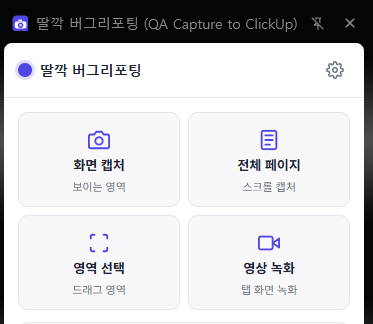
패널 상단의 캡처 버튼 4종 (화면·전체·영역·영상).
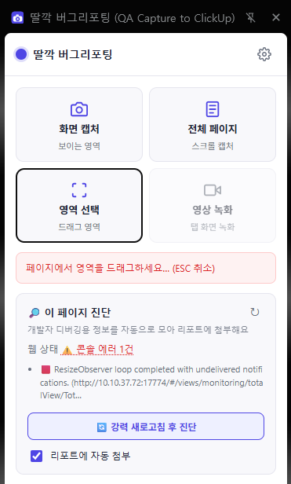
영역 선택 중에는 안내와 진행 상태가 표시되고, ESC 또는 ✕ 취소로 빠져나옵니다.
이미지 위 주석 편집
이미지 캡처(화면·전체·영역)는 캡처 직후 편집 도구가 함께 뜹니다. 영상은 재생 미리보기로 표시됩니다.
그리기 도구
화살표·형광펜·단계 번호(클릭할 때마다 자동 증가)·텍스트. 빨강/주황/파랑 색상 선택.
되돌리기
실행 취소와 전체 지우기로 언제든 수정. 등록 시 주석이 합쳐진 이미지가 첨부됩니다.
리포트 · 자동화
리포트 작성 — 알아서 채워집니다
캡처하면 리포트 폼이 뜹니다. 대부분의 항목이 자동으로 채워지므로 QA는 확인만 하면 됩니다.
제목placeholder 안내
[고객사] 이슈 내용 형식이 회색 힌트로 표시됩니다. 클릭해 입력하면 사라지므로 지울 필요가 없습니다.
우선순위
🔴 긴급 · 🟠 높음 · 🟡 보통 · ⚪ 낮음 — ClickUp 기본 우선순위로 그대로 매핑됩니다.
재현 방법자동 기록
페이지에서의 클릭·입력을 자동으로 기억해, 캡처 시점의 직전 행동을 번호 매긴 재현 단계로 자동 작성합니다. (예: 1. '조회' 버튼 클릭 → 2. 아이디 입력…)
멘션 표시
본문 맨 아래에 담당자 이름을 하이퍼링크로 넣습니다. 기본값은 내 이름이며 자유롭게 수정 가능합니다.
URL · 캡처 시각
현재 페이지 주소와 시각이 자동으로 기입됩니다.
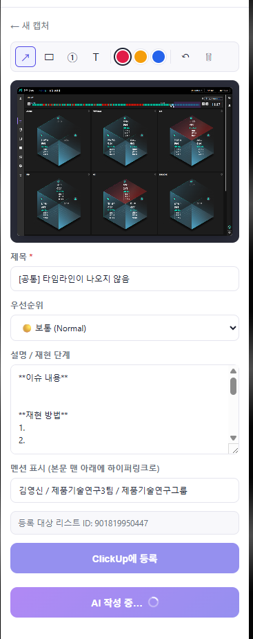
캡처 직후 화면 — 상단 주석 도구, 미리보기, 그 아래 자동 채워진 리포트 폼.
웹 상태 자동 진단
개발자 도구를 열지 않아도, 페이지의 문제를 자동으로 감지해 리포트에 첨부합니다. 개발자가 받아 바로 디버깅할 수 있는 정보입니다.
웹 상태
런처의 진단 카드에 실시간 표시됩니다. 정상 ✅⚠️ 콘솔 에러 N건 마우스를 올리면 실제 에러 내용이 보이고, 같은 에러는 (×N)으로 합쳐집니다.
수집 항목
콘솔 에러(JS 오류)와 실패한 네트워크 요청(4xx·5xx)을 iframe까지 포함해 수집합니다.
강력 새로고침 후 진단
버튼 한 번으로 페이지를 캐시 무시하고 새로고침한 뒤, 로드 중 발생하는 에러까지 잡아냅니다.
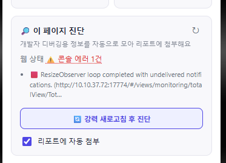
진단 카드 — 콘솔 에러 건수를 보여주고, 마우스를 올리면 실제 에러 내용이 뜹니다.
등록 — 버튼 두 개
ClickUp에 등록
작성한 내용 그대로 ClickUp에 태스크를 만들고, 캡처 이미지(또는 영상)를 첨부하며, 담당자를 본인으로 지정합니다.
🤖 AI로 다듬어 등록
OpenAI가 메모·재현 스텝·콘솔 에러·(이미지 인식 모델이면) 스크린샷을 종합해 제목·프리컨디션·재현 단계·기대/실제 결과로 정리한 뒤 등록합니다. 등록한 리포트를 예시로 기억해 쓸수록 팀 스타일에 맞춰집니다.
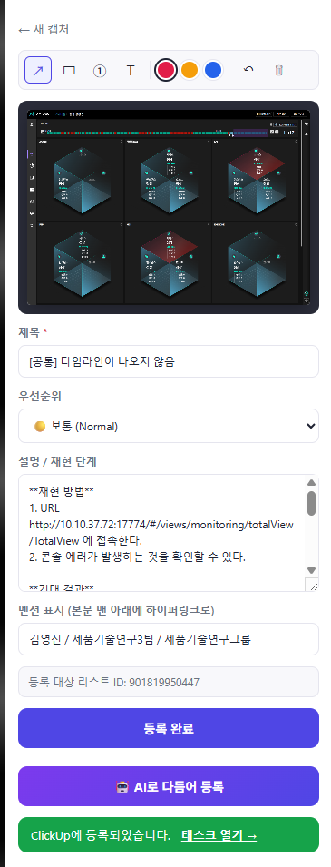
AI가 재현 방법·기대/실제 결과를 정리해 채우고, 등록까지 마친 모습.
데이터 처리
캡처·주석·웹 상태·설정은 브라우저(chrome.storage) 로컬에서 처리됩니다. “AI로 다듬어 등록”은 선택 기능으로, 이 버튼을 누를 때만 리포트 내용과 (설정 시)스크린샷이 OpenAI(사내 프록시 경유)로 전송됩니다.
올라간 결과
사람이 직접 쓴 건 제목과 주석뿐입니다. 아래 내용은 전부 자동으로 채워졌습니다.
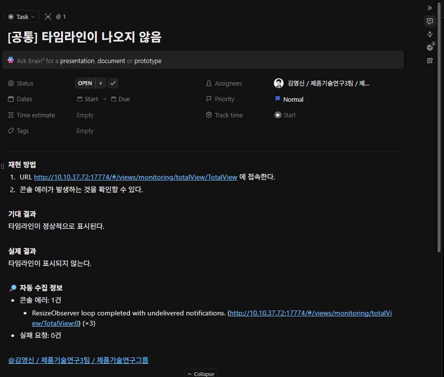
ClickUp 태스크 — 재현 방법·기대/실제 결과·자동 수집 정보가 본문에 정리됩니다.
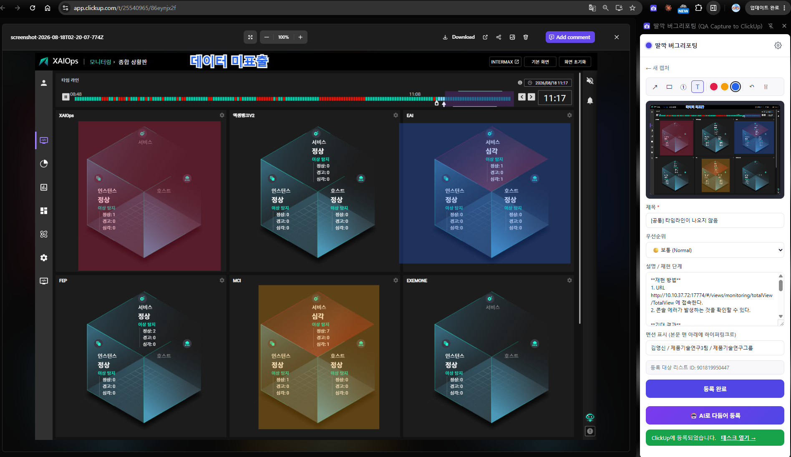
첨부 이미지를 열면 그려둔 주석이 그대로 — 어디가 문제인지 말로 설명할 필요가 없습니다.